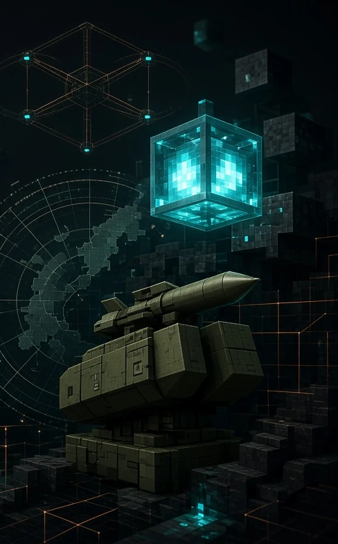
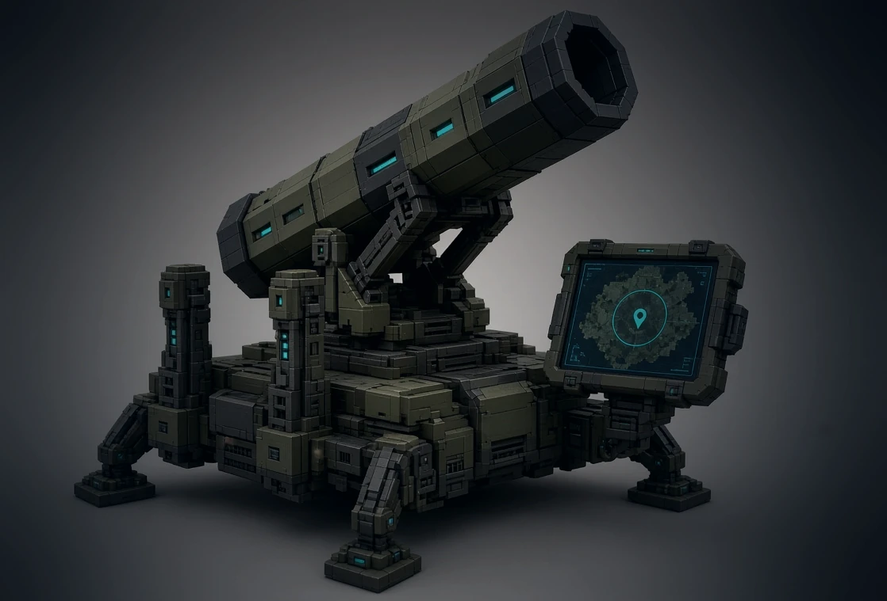

V3
다음 업데이트
신규 기능 50가지
V3는 이 팩의 다음 대규모 업데이트입니다. 맵 조준식 미사일 발사기, 새로운 보관·탐사 도구 등을 담고 있으며, 여러 번의 릴리스에 걸쳐 조금씩 구현되고 있습니다.

맵 조준식 미사일 발사기
전술 맵을 열어 최대 2,000블록 떨어진 목표에 핀을 꼽고 잠금 후 발사합니다. 좌표를 직접 입력할 필요가 없으며, 사거리·탄약·재장전 시간은 발사 전에 서버가 모두 검증합니다.
기지 규모에 맞춰 함께 커지는 보관 시설.
한 가지 자재만 쌓아 두는 높은 사일로, 물줄기에서 아이템을 바로 걸러내는 펌프, 그리고 남은 양이 한눈에 보이는 유리 저장고.
- 곡물 사일로
- 실트 필터 펌프
- 유리 암포라
어디를 다녔는지, 무엇을 찾았는지 기억합니다.
걸을수록 채워지는 살아있는 지도 테이블, 전경을 통째로 기록하는 삼각대 카메라, 그리고 항상 깊이를 알려주는 조용한 HUD 장신구.
- 리빙 맵 테이블
- 삼각대 카메라
- 깊이계
새로운 땅, 그 위에 자라는 새로운 것들.
사막 가장자리에 바람이 깔아낸 사구, 어둠 속에서만 피는 작물, 계절을 따라가는 과일나무, 물을 가득 채우지 않아도 수생 식물을 기를 수 있는 화분.
- 사구 지형
- 나이트블룸 랜턴
- 과수원
- 간석지 화분
신호를 읽고, 기지를 지킵니다.
기지 전체에 경고를 울리는 종, 레드스톤 신호 세기를 시간에 따라 그래프로 보여주는 오실로스코프, 레드스톤 가루 없이 전력을 나르는 구리 그리드, 그리고 조용히 습격 확률을 낮추는 재머.
- 공명종
- 오실로스코프
- 구리 그리드
- 습격 재머
모든 차원에 그 차원만을 위한 답이 있습니다.
엔드에 고정된 단 하나의 귀환 지점, 백룸에서 아무도 해치지 않고 상태를 안정시켜 주는 램프, 그리고 엔드 크리스탈이 실수로 터지지 않게 막아 주면서도 원할 때 무장할 수 있는 격자.
- 코러스 앵커
- 백룸 램프
- 크리스탈 격자
전체를 완성해 주는 작은 손질들.
좌석 위치가 제대로 맞는 탈것, 리빙 맵 테이블을 위해 스스로 지형을 조사하는 드론, 그리고 팩 버전 정보를 툴팁에 새겨 두는 도장.
- 시트 키트
- 드론 조사
- 설계도 스탬프
쉰 가지 기능, 규칙은 하나. 배포 전에 팩 자체의 무결성 검사를 모두 통과해야 합니다.
V3는 지금도 여러 번의 릴리스로 나누어 개발 중입니다. 아직 출시일은 정해지지 않았으며, 확정된 내용은 변경 이력 페이지에 반영됩니다. 변경 이력